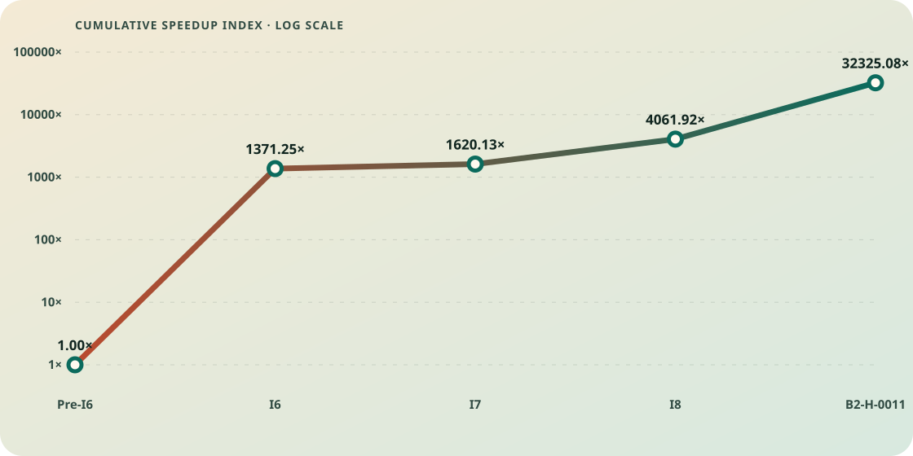

Optimization attempt ledger
Generated from
optimization-attempts.json. Do not edit this file directly. Last reviewed: 2026-08-06.
Decision policy
G9-v3, effective 2026-08-04. Read the complete policy.
Correctness and exact event semantics remain prerequisites. A demonstrated guard regression above 3% automatically vetoes certification. A demonstrated regression above 2% through 3% requires investigation and normally blocks merge. Performance-motivated complexity normally must produce at least a repeatable 5% target improvement. An explicit owner-authorized production exception may override the merge hold, but it never relabels the formal evidence as admission-eligible and must retain the adverse result and residual risk.
- Certified merge: every correctness and admission gate passes; the production baseline advances.
- Owner-authorized merge exception: production may advance after an explicit owner decision despite an investigate result, but the formal disposition, unfavorable evidence, and known residual risk remain unchanged and visible.
- Investigate: a demonstrated guard regression is above 2% through 3%, or a reviewed high-discrepancy result contains unusually large opposing effects with plausible separable causes. No code is admitted and the baseline does not move.
- Rejected: correctness fails, a guard regression exceeds 3%, or evidence closes the mechanism without sufficient unresolved value. An automatic artifact veto does not erase a separately documented algorithmic signal.
- Inconclusive: evidence cannot establish the required target gain, regression, or causal direction.
- Only merged attempts enter the efficiency-progress graph. Every outcome retains its measurements and lab note.
G9-v2 refined the learning disposition without changing historical measurements or admission decisions. B2-H-0009 remained rejected under G9-v1, and B2-H-0010 remained rejected after three inactive paths crossed the unchanged three-percent veto. Their unusually large opposing effects triggered causal follow-up rather than threshold relaxation. B2-H-0011 then repaired the diagnosed private-path compiler boundary, passed the unchanged matrix without a demonstrated regression, and merged as the first completed G9-v2 recovery. G9-v3 prospectively adds a calibrated adjacent AB/BA geometric crossover estimator with 15 cycles and a 13-of-15 directional requirement; it preserves the 2% investigation boundary, 3% veto, 5% target minimum, exact correctness gates, and every historical G9-v1/v2 ruling. B2-H-0042 formally remained investigate because Wuthering regressed 2.111%, then entered production through an explicit owner-authorized exception. That decision changed production state, not the retained formal classification.
Merged-improvement progress

The chart is an admission evidence speedup index, not a direct end-to-end historical benchmark. It starts at 1.0 and multiplies each merged optimization's frozen baseline/candidate scan-time ratio. Every non-merged experiment is excluded by construction.
| Merged optimization | Frozen positive gate | Incremental speedup | Cumulative index |
|---|---|---|---|
| I6 | Wuthering, 10k patterns, 675259 B | 1371.25x | 1371.25x |
| I7 | Wuthering, 10k patterns, 8 MiB | 1.18x | 1620.13x |
| I8 | Wuthering, 10k patterns, 8 MiB, 1 to 8 workers | 2.51x | 4061.92x |
| B2-H-0011 | Sparse literals, 10k patterns, 50 MiB, 24 workers | 7.96x | 32325.08x |
| B2-H-0042 | Diverse literals, 10k patterns, 50 MiB, 16 workers | 2.76x | 89123.18x |
Attempt ledger
I6 - Bounded lazy deterministic-state cache
- Date: 2026-07-18
- Outcome:
merged - Baseline:
9ef1b17cc6a865f44920c7c4f74f4a44b0b2c8f4 - Candidate:
406c1f5294b8797fbc47eb0c37342244426c8a9f - Mechanism: Materialize deterministic transitions lazily behind a bounded cache while retaining exact NFA fallback when the budget fills.
- Measured result: On the 10,000-pattern Wuthering comparison, median scan time fell from 45.014 s to 32.827 ms with identical 153,971 events and digest. Focused gates improved 98.25%-99.67%; the assertion bypass improved 6.46%.
- Tradeoffs and caveats: Peak RSS rose by 4.64 MiB. A 16,384-state opt-in budget was 18.1% faster than 8,192 states on one 8 MiB case, while 32,768 states eliminated fallback but was slower than 16,384.
- Decision: Merged. Exact semantics and every declared positive and guard threshold passed.
- Evidence: evidence/i6/406c1f5/README.md
I7 - Conservative start prefilter
- Date: 2026-07-18
- Outcome:
merged - Baseline:
284571996b343041d374f2620905f32d63dbafdc - Candidate:
37f69819d9231fb99d747d4ae48034204657c1f2 - Mechanism: Use compact exact-prefix tables and false-positive-only hash bitsets to skip impossible start positions before semantic verification.
- Measured result: Focused scans improved 27.47%-86.18%. Wuthering improved 35.79%, 27.08%, and 15.36% at 1,000, 5,000, and 10,000 patterns with exact event equality.
- Tradeoffs and caveats: The 10,000-pattern build cost rose from 7.673 ms to 17.261 ms. Sparse Aho-Corasick-style and anchored-trie prototypes were profiled, found slower, and removed.
- Decision: Merged only the compact conservative filter. The semantic engine remains authoritative.
- Evidence: evidence/i7/37f6981/README.md
I8 - Explicit parallel pattern partitions
- Date: 2026-07-18
- Outcome:
merged - Baseline:
f7a5e95588b96653f8cf3cb2445c6c17f571c4fe - Candidate:
ef6117368cd70b23fcfede1b26525c5f5366f53a - Mechanism: Partition the pattern database across scoped workers, retain partition-local state, then deliver the exact merged event sequence.
- Measured result: On the 10,000-pattern, 8 MiB Wuthering gate, one worker took 249.801 ms and the repeated eight-worker winner took 99.635 ms, a 2.51x throughput speedup and 60.11% time reduction.
- Tradeoffs and caveats: Scaling plateaued at 6-12 workers and degraded after 12. Eight workers were 23.6x slower on the smallest short-input guard. Every worker traverses the corpus, memory rises, and callback delivery remains serial.
- Decision: Merged as explicit opt-in parallelism; the public default remains one worker.
- Evidence: evidence/i8/ef61173/README.md
B2-H-0001 - Shared candidate-start scan
- Date: 2026-07-25
- Outcome:
rejected - Baseline:
da755b0069c94d4da9db74a8778dd9932fc64671 - Candidate:
1c489ea46c2ef5d48634f2dc8017b56f7415d4f7 - Mechanism: Replace repeated partition-local literal candidate scans with one immutable shared candidate-start plan.
- Measured result: Aggregate cycles, instructions, and cache references fell roughly 70%, but both six-worker targets regressed about 28%. Guards regressed 5%-42.6%, triggering the automatic veto.
- Tradeoffs and caveats: Candidate planning and prefix admission moved onto the serial critical path. The useful idea would require parallel production or pipelining rather than a serial union.
- Decision: Rejected and not admitted despite lower aggregate machine work.
- Evidence: https://github.com/la3lma/rmatch-performance-measurements/blob/7d4591518a6018eb1ffa3fd1e8b2885d4b505756/docs/lab-notebook/2026-07-25-b2-h-0001-shared-candidate-starts.md
B2-H-0002 - Persistent worker pool
- Date: 2026-07-25
- Outcome:
rejected - Baseline:
da755b0069c94d4da9db74a8778dd9932fc64671 - Candidate:
a0477c0d32c8e6a98ed008d92b648a73c1ffa588 - Mechanism: Measure whether per-scan thread creation and joining justify a persistent worker executor.
- Measured result: Lifecycle plus join was 2.4618% of scan time, with worker spawn only 0.0320%. Two workers were 2.3466% slower than one.
- Tradeoffs and caveats: Most measured join time was a symptom of the slowest worker tail, not removable executor overhead.
- Decision: Diagnostic rejected; no pool implementation or production candidate was created.
- Evidence: https://github.com/la3lma/rmatch-performance-measurements/blob/7d4591518a6018eb1ffa3fd1e8b2885d4b505756/docs/lab-notebook/2026-07-25-b2-h-0002-worker-lifecycle.md
B2-H-0003 - Load-aware pattern partitioning
- Date: 2026-07-25
- Outcome:
rejected - Baseline:
da755b0069c94d4da9db74a8778dd9932fc64671 - Candidate:
1085667916e863604742830a75a3480c97fde97b - Mechanism: Measure removable worker skew and search for a stable compile-time predictor before implementing weighted pattern partitions.
- Measured result: Median removable skew was only 1.7699% at eight workers and 1.4288% at twelve. No stable predictor emerged; twelve-worker throughput was 0.8273% lower.
- Tradeoffs and caveats: The worker tail exists, but its recoverable ceiling is below the 5% burden and partition identity is unstable.
- Decision: Diagnostic rejected; no load-balancing candidate was created.
- Evidence: https://github.com/la3lma/rmatch-performance-measurements/blob/7d4591518a6018eb1ffa3fd1e8b2885d4b505756/docs/lab-notebook/2026-07-25-b2-h-0003-partition-balance.md
B2-H-0005 - Adaptive deterministic-cache budget
- Date: 2026-07-26
- Outcome:
rejected - Baseline:
da755b0069c94d4da9db74a8778dd9932fc64671 - Candidate:
dd6db6704cbedefb539210f10d4fff451fc30d46 - Mechanism: Double the total cache budget at the 16- and 24-worker endpoints to test whether deterministic fallback explains the scaling collapse.
- Measured result: Fallback fell 5.25% and 5.43%, but throughput changed only +0.4319% at 16 workers and -0.8344% at 24. Hardware cache-miss rate worsened 25.92% and 19.79%.
- Tradeoffs and caveats: Peak RSS increased about 1.5%-1.7%; reducing fallback did not recover the retained 44.34% 16-to-24-worker throughput loss.
- Decision: Diagnostic rejected; no adaptive cache policy or production candidate was created.
- Evidence: https://github.com/la3lma/rmatch-performance-measurements/blob/7d4591518a6018eb1ffa3fd1e8b2885d4b505756/docs/lab-notebook/2026-07-26-b2-h-0005-cache-budget-v2.md
B2-H-0004 - Dense-output buffering and callback delivery
- Date: 2026-07-26
- Outcome:
rejected - Baseline:
da755b0069c94d4da9db74a8778dd9932fc64671 - Candidate:
f30869b87ab7d568c4b3f7a257f9f1e75c59713c - Mechanism: Separate dense event discovery, vector growth, assembly, hashing, and external callback delivery before implementing exact-capacity buffering or batching.
- Measured result: Callback omission changed median scan time by -0.16% at 16 workers and +0.08% at 32, with both 95% intervals spanning zero. Vector growth consumed only 0.033-0.078 ms; the zero-output control passed.
- Tradeoffs and caveats: The diagnostic preserved all 500,000 events and exact digest. Maximum partition scan time rose from 128.43 ms to 216.43 ms from 16 to 32 workers, while callback throughput retained 60.28%, pointing away from delivery and toward discovery or shared-resource pressure.
- Decision: Diagnostic rejected; no event-buffering, callback-batching, profiling, or production candidate was created.
- Evidence: https://github.com/la3lma/rmatch-performance-measurements/blob/d2a92174e4629aa33d04b636e469c7e41505c240/docs/lab-notebook/2026-07-26-b2-h-0004-event-delivery.md
B2-H-0008 - FUTURE-MEMORY duplicated-traversal diagnostic
- Date: 2026-07-26
- Outcome:
inconclusive - Baseline:
da755b0069c94d4da9db74a8778dd9932fc64671 - Candidate:
cf852a86552b9733251f91a176faa48a39de9da7 - Mechanism: Measure exact logical input work, cache pressure, AMD fill proxies, and topology-aware placement across the sparse and dense high-worker reversals without changing production behavior.
- Measured result: The sparse 16-to-24-worker step lost 42.52% throughput while cache misses rose 47.07%; the dense 16-to-32 step lost 41.30% while cache misses rose 61.97%. Aggregate logical work scaled exactly with partitions, while topology-aware placement recovered only 0.70% and 0.12%.
- Tradeoffs and caveats: The retained fill events are memory-hierarchy proxies rather than direct controller bandwidth. The diagnostic supports duplicated traversal and hierarchy pressure, but does not isolate DRAM saturation or provide a production implementation.
- Decision: Diagnostic completed with exact semantics and clean instrumentation. It admits no code; fresh B2 review separately authorized B2-H-0009 as the bounded production follow-up, which was subsequently tested and rejected.
- Evidence: https://github.com/la3lma/rmatch-performance-measurements/blob/e38edc1ede61ce253866939e3aee84db576ef836/docs/lab-notebook/2026-07-26-b2-h-0008-future-memory.md
B2-H-0009 - Parallel shared candidate planning
- Date: 2026-07-26
- Outcome:
investigate - Baseline:
da755b0069c94d4da9db74a8778dd9932fc64671 - Candidate:
b05e482ce9aafd9dac1bf083308d78ed0ce131ef - Mechanism: Build one conservative union candidate bitmap with eight disjoint input-range shards, then let each existing pattern-partition worker admit only its own necessary prefixes.
- Measured result: Exact semantics and all four primary targets passed. The sparse 50 MiB, 10,000-literal, 24-worker target improved 734.672% (8.35x), with the other primary effects ranging from +122.143% to +395.281%. The unchanged zero-output private fallback regressed 2.00249%, with all six pairs negative.
- Tradeoffs and caveats: The shared plan removed repeated corpus traversal and proved very high upside for large high-worker literal workloads. Binary analysis found the private scanner's 4,341-instruction mnemonic sequence unchanged but relocated. Static controls found that candidate-only diagnostics account for 0x1540, about 73%, of a uniform 0x1cf0 displacement; shared implementation code leaves 0x7b0. The rejecting guard never activated the new algorithm, creating a strong code-layout confound and an unusually large target/guard discrepancy.
- Decision: The exact H9 artifact remains rejected, unmerged, and excluded from progress under its frozen G9-v1 ruling. Under G9-v2 the mechanism is classified investigate: retain every receipt and run one instrumentation-neutral, pipeline-isolated successor through the unchanged numeric gates.
- Evidence: https://github.com/la3lma/rmatch-performance-measurements/blob/8d735196bef1e488f544e158ecd4b20a6332586b/docs/lab-notebook/2026-07-26-b2-h-0009-parallel-shared-candidates.md
B2-H-0010 - Instrumentation-neutral shared candidate isolation
- Date: 2026-07-26
- Outcome:
investigate - Baseline:
da755b0069c94d4da9db74a8778dd9932fc64671 - Candidate:
a371125f22fb18797c1d1c6e595f1fd0a987c5a0 - Mechanism: Reconstruct H9 with scan-local shared candidates, byte-identical benchmark source, unchanged Matcher and diagnostics state, and separately compiled private and shared source modules.
- Measured result: Exact semantics and all four primary targets passed. Sparse 50 MiB improved 371.639% and 709.958%; dense 50 MiB improved 118.381% and 310.996%. Three inactive guards that never created the shared planner regressed 20.120%-24.928%, with all six pairs negative in each cell.
- Tradeoffs and caveats: The static isolation proxy passed: the selected baseline and candidate private specialization had equal size, mnemonic sequence, and 64-byte alignment. The large inactive-path regressions nevertheless remained scan-phase costs, while preparation and RSS were neutral. A neutral inactive Wuthering guard proves the effect is workload- or path-sensitive rather than a universal dispatch charge.
- Decision: The exact H10 artifact is rejected, unmerged, and excluded from progress by the unchanged three-percent veto. The shared-candidate mechanism remains investigate because its 2.18x-8.10x target ratios oppose large regressions on dormant paths; next compare the actual guard symbols, callers, placement, and profiles across baseline, H9, and H10 before authorizing another implementation.
- Evidence: https://github.com/la3lma/rmatch-performance-measurements/blob/1795c527e82b07738e5669ead9e878775cd8e1e6/docs/lab-notebook/2026-07-26-b2-h-0010-shared-candidate-isolation.md
B2-H-0011 - Shared candidate recovery with private prefilter inlining
- Date: 2026-07-26
- Outcome:
merged - Baseline:
da755b0069c94d4da9db74a8778dd9932fc64671 - Candidate:
bacd5c46d934cd5526dcab78af88e375b2f13370 - Mechanism: Retain H10's parallel shared-candidate architecture, then restore the baseline private scanner's compiler shape by forcing the tiny literal-prefix predicate back into the per-start hot loop.
- Measured result: Exact semantics and all eleven frozen cells passed. The four primary targets improved 116.181%-695.703%; the strongest sparse 24-worker gate reached 7.96x baseline throughput. H10's three vetoing inactive paths recovered from -20.120% to -24.928% into +0.641% to +1.956% improvements.
- Tradeoffs and caveats: The accepted artifact is the complete four-commit architecture plus repair, not the final annotation in isolation. Wuthering was +6.803% in aggregate but order-sensitive (+9.287% AB, +0.053% BA), so it is not claimed as a portable gain. Three pre-measurement windows were rejected and retained without creating timing receipts.
- Decision: Accepted under the unchanged G9-v2 matrix and merged as exact measured source in merge commit de33ea16673d179c5878045b44ec5e4eefa970f7. No demonstrated regression, unresolved negative, automatic veto, or opposed signal remained.
- Evidence: experiments/b2-h-0011-private-prefilter-recovery.md
B2-H-0012 - Assertion-bearing conservative literal prefilter
- Date: 2026-07-26
- Outcome:
investigate - Baseline:
bacd5c46d934cd5526dcab78af88e375b2f13370 - Candidate:
169c47c0c1360dbbf4653834bd144d9a66a14093 - Mechanism: Step past only leading zero-width assertions while proving necessary literal prefixes, then use a private candidate bitmap without exposing assertion filters to H11 shared planning.
- Measured result: Exact semantics and all three targets passed. Sparse assertion targets improved 18,421%-38,435% (about 185x-385x baseline), and the mixed adversary improved 72,035% (about 721x). The unrelated Wuthering guard regressed 3.038%, with all six pairs negative, and assertion preparation regressed 11.161%-22.316%.
- Tradeoffs and caveats: The scan algorithm removes almost all impossible assertion starts and has exceptional upside, but filter proof and construction add preparation cost. Wuthering cannot execute the assertion path; candidate-only sink-specialized assertion functions changed ordinary scanner size and placement, making code-generation or hot-layout interference the leading regression hypothesis.
- Decision: Machine-rejected by the unchanged three-percent veto and not merged. Classified investigate under G9-v2 because the enormous target gains oppose a plausibly separable inactive-path regression. The next successor must isolate assertion dispatch, preserve ordinary scanner shape, and reduce preparation cost under a fresh frozen contract.
- Evidence: experiments/b2-h-0012-assertion-prefilter-result.md
B2-H-0013 - Assertion prefilter dispatch and construction recovery
- Date: 2026-07-27
- Outcome:
investigate - Baseline:
bacd5c46d934cd5526dcab78af88e375b2f13370 - Candidate:
fb836900c7ef8a872da44638c6f626a7547c7487 - Mechanism: Retain H12's exact assertion-candidate algorithm behind one non-generic scanner, a stack prefix value, used-width literal tables, and assertion-private metadata.
- Measured result: Exact semantics and all three focused assertion targets passed. The 1,000-pattern boundary improved 22,567.445% (226.67x), the 500-pattern neighbor improved 21,516.882% (216.17x), and the mixed adversary improved 72,625.754% (727.26x). Wuthering regressed 5.791% with all six pairs negative, and assertion preparation regressed 5.862%-13.359%.
- Tradeoffs and caveats: Five H12 assertion-plan copies totaling 17,776 bytes became one 2,512-byte function, but the ordinary scanner still changed shape and total text grew. Prefix proof still retained a 32-unit value although the private filter consumes at most five units, leaving a concrete construction-cost recovery untried.
- Decision: Machine-rejected by the unchanged focused veto and stopped before the full matrix. Not merged and excluded from progress. Classified investigate because exact 216x-727x gains remain opposed by two narrower, plausibly separable inactive-path and construction mechanisms.
- Evidence: experiments/b2-h-0013-assertion-prefilter-recovery-result.md
B2-H-0014 - Assertion recovery stack
- Date: 2026-07-27
- Outcome:
rejected - Baseline:
bacd5c46d934cd5526dcab78af88e375b2f13370 - Candidate:
0c20ed79ae595c731e6d981ad1b57ef5f1087f76 - Mechanism: Combine a compact assertion-prefix sidecar, single-hash transactional registration, a smaller assertion-private table, one-pass HIR metadata, and physically separate ordinary and assertion scanners.
- Measured result: Exact assertion targets improved about 185x-425x and the adversarial neighbor about 736x. Wuthering scan regressed 6.432%, Wuthering wall regressed 4.284%, and multiple preparation and RSS guards crossed the unchanged veto.
- Tradeoffs and caveats: The inactive assertion-free Wuthering failure implicated code-generation coupling, binary layout, or shared-path shape rather than the candidate filter itself. Isolated preparation microscopes also opposed the formal fresh-process results.
- Decision: Machine-rejected by the unchanged G9-v2 matrix and not merged. The mechanism remained investigate because the exceptional scan signal had plausible separable blockers.
- Evidence: https://github.com/la3lma/rmatch-performance-measurements/blob/209ad09073888300d6c1fb118c1b7b05bb7640f9/docs/lab-notebook/2026-07-27-b2-h-0014-assertion-recovery-stack.md
B2-H-0015 - Ordinary-path reinlining diagnostic
- Date: 2026-07-27
- Outcome:
rejected - Baseline:
bacd5c46d934cd5526dcab78af88e375b2f13370 - Candidate:
81dbbf682afd3126b109019be4ef12eeebf10ecc - Mechanism: Make assertion metadata pay-for-use and re-inline the ordinary path to test whether H14's inactive Wuthering regression was removable by restoring the former hot-path shape.
- Measured result: The focused Wuthering gate still regressed 7.10%, refuting ordinary-path reinlining as a sufficient repair before a formal matrix was authorized.
- Tradeoffs and caveats: This was a retained non-admission discriminator, not a formal production candidate. It narrowed the compiler-shape hypothesis toward the shared scanner specialization boundary.
- Decision: Rejected at the focused gate, not merged, and superseded by H16's concrete non-inlined shared scanner.
- Evidence: https://github.com/la3lma/rmatch-performance-measurements/blob/209ad09073888300d6c1fb118c1b7b05bb7640f9/docs/lab-notebook/2026-07-27-b2-h-0014-assertion-recovery-stack.md
B2-H-0016 - Shared scanner specialization recovery
- Date: 2026-07-27
- Outcome:
rejected - Baseline:
bacd5c46d934cd5526dcab78af88e375b2f13370 - Candidate:
68c007763d21de253e49c611b198868abc745d3b - Mechanism: Retain conservative private assertion candidates while making metadata pay-for-use and moving shared scanning behind a concrete, non-inlined event-vector boundary.
- Measured result: Assertion targets improved about 187x-428x and the adversarial neighbor about 721x. Ordinary scan paths recovered near H11, but target preparation regressed 4.607%-5.747%, boundary-500 preparation regressed 12.159%, and Wuthering wall/RSS strata vetoed.
- Tradeoffs and caveats: The candidate recovered H14's main inactive scan blocker. Later cold-process diagnostics did not reproduce Wuthering secondary vetoes but could not waive the clean formal observations.
- Decision: Machine-rejected by the unchanged G9-v2 matrix and not merged. The narrowed remaining opportunity moved to construction metadata.
- Evidence: https://github.com/la3lma/rmatch-performance-measurements/blob/209ad09073888300d6c1fb118c1b7b05bb7640f9/docs/lab-notebook/2026-07-27-b2-h-0016-shared-specialization-recovery.md
B2-H-0017 - Simple HIR metadata recovery
- Date: 2026-07-27
- Outcome:
rejected - Baseline:
bacd5c46d934cd5526dcab78af88e375b2f13370 - Candidate:
9fa5f9d95eb1021c3edd54fe36b44a821026c5b8 - Mechanism: Accumulate normalized simple-sequence HIR metadata directly to retain H16's assertion scan mechanism while reducing repeated construction work.
- Measured result: Assertion targets improved about 189x-428x and the adversarial neighbor about 721x. Ordinary, shared, and Wuthering blockers recovered, but preparation still regressed 3.936%-7.651% on several cells and adversarial RSS regressed 3.149%.
- Tradeoffs and caveats: The same matcher reported opposing preparation effects across cells that differed only in corpus or worker request, revealing launch, allocator, cache-state, or measurement coupling without invalidating the formal vetoes.
- Decision: Machine-rejected by the unchanged G9-v2 matrix and not merged. The next step became an independent preparation and allocation audit rather than another speculative source tweak.
- Evidence: https://github.com/la3lma/rmatch-performance-measurements/blob/209ad09073888300d6c1fb118c1b7b05bb7640f9/docs/lab-notebook/2026-07-27-b2-h-0017-simple-metadata-recovery.md
B2-H-0018 - Adaptive assertion-filter footprint
- Date: 2026-07-28
- Outcome:
rejected - Baseline:
bacd5c46d934cd5526dcab78af88e375b2f13370 - Candidate:
3e184314daf64e76dee44cae0c452e856967f161 - Mechanism: Right-size the assertion five-prefix hash from H17's fixed 32 KiB payload to an 8-32 KiB power-of-two range based on raw filterable-prefix rows.
- Measured result: Exact targets improved about 188x-429x and the adversarial neighbor about 745x. The target filter shrank from 32,824 to 8,248 bytes, but five cells retained preparation vetoes and two cells retained peak-RSS vetoes.
- Tradeoffs and caveats: H18 removed exactly 24,576 compile-allocation bytes on the 500- and 1,000-pattern fixtures, yet formal construction did not consistently recover. The boundary fixtures contained only one unique five-unit prefix despite hundreds of raw rows.
- Decision: Machine-rejected by the unchanged G9-v2 matrix and not merged. The unique-prefix observation authorized only a bounded multifidelity diagnostic, not another full run.
- Evidence: https://github.com/la3lma/rmatch-performance-measurements/blob/209ad09073888300d6c1fb118c1b7b05bb7640f9/docs/lab-notebook/2026-07-28-b2-h-0018-adaptive-filter-recovery.md
B2-H-0019 - Inline exact single-prefix recovery
- Date: 2026-07-28
- Outcome:
rejected - Baseline:
bacd5c46d934cd5526dcab78af88e375b2f13370 - Candidate:
6baf8b1b66badf79657f679dd5351a293c2d12d9 - Mechanism: Store exactly one unique ASCII five-unit assertion prefix in a packed u64 with no heap allocation, falling back to H18's adaptive hash on a second distinct key.
- Measured result: L2 roughly halved target lookup time and removed the five-prefix allocation. Guarded L3 retained about 220x scan speedups and shrank target retained state from 8,248 to 64 bytes, but boundary-500 preparation remained 12.774% slower than H11.
- Tradeoffs and caveats: A four-key inline predecessor was rejected at L2 for doubling adversarial lookup time. Exact-one-key H19 improved memory but did not improve whole-matcher preparation, falsifying filter payload allocation as the preparation bottleneck. A guarded 13,500-build H11/H18/H19 follow-up found the boundary-500 cost distributed across sidecar and parse/HIR work; no phase explained half of a positive internal delta at both 500 and 1,000 patterns.
- Decision: Diagnostically refuted before formal G9, not merged, and excluded from progress. The phase audit did not authorize H20: boundary-500 was +5.394% in 5/6 blocks, boundary-1000 was only +1.799% in 4/6 blocks, and even perfect removal of the stable added phases was below the normal keeper threshold.
- Evidence: https://github.com/la3lma/rmatch-performance-measurements/blob/3de2e7c9cf957b7ffa859f46418c0864f8b85601/docs/lab-notebook/2026-07-28-post-h19-construction-phase-audit.md
B2-H-0020 - Strict common-prefix assertion recovery
- Date: 2026-07-28
- Outcome:
investigate - Baseline:
bacd5c46d934cd5526dcab78af88e375b2f13370 - Candidate:
730cec6492ff2356f53b368e214e5e8dfd78bbb9 - Mechanism: Build an assertion-only candidate scanner only when every pattern in a partition proves the same first five ASCII symbols, store that prefix in one packed u64, and preserve exact H11 fallback for every uncertain or ineligible partition.
- Measured result: All three formal targets passed at about 200.49x, 230.79x, and 461.79x baseline throughput. Every primary guard was neutral or faster and correctness was exact, but preparation vetoed in two target cells and Wuthering: the candidate-before-baseline strata were -13.472%, -13.723%, and -3.540%.
- Tradeoffs and caveats: H20 narrowed H18's multiple construction and RSS failures to three preparation-only vetoes and added no wall-time or RSS veto. Wuthering cannot execute the new assertion path, so its order-only loss points to residual launch, cache-state, allocator, binary-layout, or measurement coupling; that signal does not waive the unchanged gate.
- Decision: Machine-rejected and not merged. Classified investigate under G9-v2 because exact two-to-three-order target gains oppose a narrow, plausibly separable preparation failure. H11 remains production and H20 is excluded from the progress graph.
- Evidence: experiments/b2-h-0020-strict-common-prefix-result.md
B2-H-0022 - Construction-neutral assertion prefix recovery
- Date: 2026-07-29
- Outcome:
investigate - Baseline:
bacd5c46d934cd5526dcab78af88e375b2f13370 - Candidate:
a83b9c61ee24fa043891e8d6a2a25cfa2624722a - Mechanism: Derive strict assertion-prefix facts during NFA construction and store five bytes in existing padding while retaining the exact NFA as authority.
- Measured result: Target scans improved about 203x, 203x, and 407x with exact semantics and neutral primary guards. Boundary-500 preparation regressed 6.931% in aggregate and crossed the automatic veto.
- Tradeoffs and caveats: The candidate removed broad H20 construction failures but left one localized fixed-cost preparation blocker at the smallest eligible boundary.
- Decision: Machine-rejected and not merged; retained as investigate because the exceptional scan gain remained plausibly separable from the localized construction cost.
- Evidence: experiments/b2-h-0026-terminal-memory-layout-recovery.md#b2-h-0022-and-h23
B2-H-0023 - Integrated prefix-construction discriminator
- Date: 2026-07-29
- Outcome:
rejected - Baseline:
a83b9c61ee24fa043891e8d6a2a25cfa2624722a - Candidate:
1dc47783ea39703371cbedd06aa61707e336e1b3 - Mechanism: Fold H22's bounded prefix observation into the existing recursive NFA compilation walk.
- Measured result: Boundary-500 build time worsened 1.175% with 10 of 12 observations slower; boundary-1000 worsened 0.199%.
- Tradeoffs and caveats: Removing the separate six-item HIR walk did not recover meaningful construction cost and added control-flow or layout pressure.
- Decision: Rejected before dense or formal timing; no production code admitted.
- Evidence: experiments/b2-h-0026-terminal-memory-layout-recovery.md#b2-h-0022-and-h23
B2-H-0024 - Allocation-sparse NFA construction
- Date: 2026-07-29
- Outcome:
investigate - Baseline:
bacd5c46d934cd5526dcab78af88e375b2f13370 - Candidate:
6cc6da3887555345f78b557cd47efdf92568bd21 - Mechanism: Store empty and singleton pending-edge lists inline and spill only actual branching states while preserving final NFA edge order.
- Measured result: Targets retained about 204x, 200x, and 406x scan gains; preparation improved 15.39%-45.30% across all cells. One adversarial candidate-before peak-RSS stratum was 2.360% worse.
- Tradeoffs and caveats: The roughly 172 KiB RSS order signal did not reproduce in the larger cold-process discriminator, but the original frozen disposition cannot be rewritten.
- Decision: Not merged; retained as investigate and used as the control for the narrower terminal-memory successors.
- Evidence: experiments/b2-h-0026-terminal-memory-layout-recovery.md#h24-and-h25
B2-H-0025 - Compact terminal ordinal
- Date: 2026-07-29
- Outcome:
investigate - Baseline:
6cc6da3887555345f78b557cd47efdf92568bd21 - Candidate:
eab175cc5879b49f89f033b53455f080373b4012 - Mechanism: Use a nonzero terminal ordinal niche to reduce temporary PendingState from 40 to 32 bytes.
- Measured result: Allocated bytes fell 10.80%-14.31% and peak live allocator bytes fell 7.55%-8.45%, but Wuthering scan regressed 4.253% against H24.
- Tradeoffs and caveats: The compact temporary representation was gone before scanning, making code placement or code-generation perturbation the leading cause of the unrelated guard loss.
- Decision: Focused gate failed; no formal G9 and no merge. The memory mechanism remained worth causal recovery.
- Evidence: experiments/b2-h-0026-terminal-memory-layout-recovery.md#h24-and-h25
B2-H-0026 - Sentinel terminal-memory recovery
- Date: 2026-07-29
- Outcome:
rejected - Baseline:
6cc6da3887555345f78b557cd47efdf92568bd21 - Candidate:
e0c33572fbb9ddd386da50151954d9b4ebb09a38 - Mechanism: Represent temporary terminal states with an inline sentinel, then separate the construction-memory gain from the unrelated scan regression.
- Measured result: Allocated bytes fell 10.80%-14.30% and peak live bytes fell 7.55%-8.45%. Natural matched Wuthering was 3.269% slower, while an instruction-identical phase-matched diagnostic recovered to 0.535% faster.
- Tradeoffs and caveats: Perf showed 0.15% fewer instructions but 4.78% more cycles and 4.71% lower IPC in the natural placement. The scan penalty is placement-sensitive rather than algorithmic, but no production artifact passed every gate.
- Decision: The source candidate and complete H26-H38 recovery line are closed without merge. H11 remains production.
- Evidence: experiments/b2-h-0026-terminal-memory-layout-recovery.md#h26-causal-separation
B2-H-0028 - Innermost-loop alignment discriminator
- Date: 2026-07-29
- Outcome:
rejected - Baseline:
6cc6da3887555345f78b557cd47efdf92568bd21 - Candidate:
e0c33572fbb9ddd386da50151954d9b4ebb09a38 - Mechanism: Use an unstable LLVM loop-alignment control to align the retained innermost scan loop without source padding.
- Measured result: Wuthering scan remained 1.781% slower in aggregate and 3.492% slower when the candidate ran first.
- Tradeoffs and caveats: The backend control was unstable, did not remove order sensitivity, and a global 64-byte policy bloated text.
- Decision: Rejected as a non-portable and ineffective layout repair.
- Evidence: experiments/b2-h-0026-terminal-memory-layout-recovery.md#recovery-attempts
B2-H-0032 - StartTable iterator reshaping
- Date: 2026-07-29
- Outcome:
rejected - Baseline:
6cc6da3887555345f78b557cd47efdf92568bd21 - Candidate:
1150838cbbb7bf5a9964b3730bbca42fd39f45ab - Mechanism: Reshape StartTable iteration and counting in source to alter hot-loop placement without changing semantics.
- Measured result: Wuthering scan regressed 11.050% in aggregate, 11.477% candidate-before, and 10.670% candidate-after.
- Tradeoffs and caveats: The source rewrite added iterator cursor traffic; reaching a preferred phase did not preserve the original instruction stream.
- Decision: Rejected decisively. A copied-artifact mutation during preflight was caught by SHA-256 before timing and retained separately.
- Evidence: experiments/b2-h-0026-terminal-memory-layout-recovery.md#recovery-attempts
B2-H-0036 - Stable Rust profile-guided layout
- Date: 2026-07-29
- Outcome:
rejected - Baseline:
6cc6da3887555345f78b557cd47efdf92568bd21 - Candidate:
e0c33572fbb9ddd386da50151954d9b4ebb09a38 - Mechanism: Use stable Rust PGO with assay-disjoint synthetic workloads to stabilize the H26 scan placement.
- Measured result: The v2 candidate made Wuthering 25.357% slower. V3 corrected production-specialization coverage, but a frozen training command resolved the wrong path and failed before candidate generation.
- Tradeoffs and caveats: V2 trained a bench-local one-worker monomorphization while the guard used a distinct 64-worker production specialization. The bounded v3 correction refused to drift into iterative profile tuning.
- Decision: PGO branch closed after its frozen correction failed coverage; no merge.
- Evidence: experiments/b2-h-0026-terminal-memory-layout-recovery.md#recovery-attempts
B2-H-0037 - Matched ThinLTO build policy
- Date: 2026-07-29
- Outcome:
rejected - Baseline:
6cc6da3887555345f78b557cd47efdf92568bd21 - Candidate:
e0c33572fbb9ddd386da50151954d9b4ebb09a38 - Mechanism: Build H24 and H26 under the same stable ThinLTO policy to test whether broader link-time optimization neutralizes incidental placement.
- Measured result: Wuthering scan regressed 4.358% in aggregate and 5.960% candidate-before; the hot-loop shift remained 48 bytes.
- Tradeoffs and caveats: ThinLTO preserved instruction identity but did not decouple
.textfrom the preceding unwind-metadata size change. - Decision: Stage one failed; accepted-baseline timing was not authorized.
- Evidence: experiments/b2-h-0026-terminal-memory-layout-recovery.md#recovery-attempts
B2-H-0038 - Instrumented BOLT matched placement
- Date: 2026-07-29
- Outcome:
rejected - Baseline:
6cc6da3887555345f78b557cd47efdf92568bd21 - Candidate:
e0c33572fbb9ddd386da50151954d9b4ebb09a38 - Mechanism: Instrument matched H24/H26 builds on one assay-disjoint 64-worker StartTable workload and apply one frozen BOLT placement policy.
- Measured result: BOLT placed both production scan hot fragments at the same address and size; each profile attributed 97.96% of execution to that specialization. H26 scan was 1.266% faster in aggregate, but crossed from 4.044% faster when first to 4.710% slower when second.
- Tradeoffs and caveats: The profiles show effectively identical hot-block and edge distributions and only 0.001642% total instruction-trace difference. The opposed order strata prevent certification despite strong causal separation.
- Decision: Stage one failed and the one-shot contract forbade stage two or benchmark-informed BOLT tuning. No merge.
- Evidence: experiments/b2-h-0026-terminal-memory-layout-recovery.md#h38-final-separation
B2-H-0039 - Density-aware partition route masks
- Date: 2026-07-29
- Outcome:
rejected - Baseline:
bacd5c46d934cd5526dcab78af88e375b2f13370 - Candidate:
3bad489ad3bc3221f1cf1e269fd95a885b3f17f5 - Mechanism: Route dense H11 union candidates through compact partition masks while preserving the exact per-partition verifier and the unchanged sparse bitmap path.
- Measured result: Dense scan improved 4.894% at 16 workers and 9.529% at 32 workers, with all six pairs positive in both cells. Dense scan-local candidate storage fell 14.93%. The inactive Wuthering guard regressed 3.822% in scan and 3.456% in process wall.
- Tradeoffs and caveats: The routing mechanism is causally useful on dense inputs, but dense-16 missed its frozen five-percent target by 0.106 percentage points. Wuthering cannot activate routing, yet its repeatable inactive-path regression exceeded the unchanged three-percent veto and cannot be waived as a layout artifact.
- Decision: Rejected before full G9; no merge. H11 remains production. Retain H39 as positive dense-routing evidence and revisit only with a materially different stable representation or isolation method.
- Evidence: experiments/b2-h-0039-partition-routing.md
B2-H-0040 - Exact AVX2 shared candidate discovery
- Date: 2026-08-04
- Outcome:
rejected - Baseline:
bacd5c46d934cd5526dcab78af88e375b2f13370 - Candidate:
843ebafe947fd8749c0f8e843af4ce480b40c3b4 - Mechanism: Compute eight exact five-unit FNV candidate hashes per AVX2 step while preserving conservative non-ASCII admission, scalar fallback, and the unchanged exact per-partition verifier.
- Measured result: The isolated kernel improved candidate-plan time 4.413x-4.641x. The bounded recovery improved all four target scans 22.937%-63.445% and process wall 19.519%-41.658%, with every target scan pair positive. The inactive Wuthering candidate-after stratum regressed 5.272% in scan and 3.321% in peak RSS.
- Tradeoffs and caveats: The recovery kept H11 density sampling scalar, reproduced the accepted H11 build environment byte-for-byte, retained exact hot-function sizes and mnemonic sequences, and reduced total load-image growth to 24 bytes. Wuthering and the ordinary guard execute no SIMD, so the remaining veto is an inactive-path code-generation or process-layout cost rather than required kernel work.
- Decision: Rejected before full G9; no merge. A further placement cycle would risk forbidden padding or benchmark-specific link tuning. Retain the exceptional target signal and revisit only with a generally applicable stable layout boundary or a materially different exact literal engine.
- Evidence: experiments/b2-h-0040-simd-candidate-discovery.md
B2-H-0042 - Calibrated inline AVX2 shared candidate discovery
- Date: 2026-08-04
- Outcome:
merged - Baseline:
bacd5c46d934cd5526dcab78af88e375b2f13370 - Candidate:
c6f221bda8241123281aea8659dd56eeb8a13be0 - Mechanism: Recover H40's exact AVX2 candidate fill with an always-inlined dispatch boundary, then evaluate the exact artifact through the calibrated 30-pair G9-v3 crossover matrix.
- Measured result: All four targets passed with 15 of 15 positive cycles and scan gains of 30.305%-175.971%. Two neighbors and the mixed guard improved 43.986%-235.754%. Three other guards stayed inside noise, while Wuthering at 64 workers regressed 2.111% with 13 of 15 cycles negative.
- Tradeoffs and caveats: Correctness, source and artifact provenance, workspace tests, host isolation, Docker/GPU cleanliness, and every secondary metric passed. Wuthering was 0.111 percentage points beyond the unchanged investigation boundary and below the 3% veto; its 13-of-15 negative directional burden remains a known production regression rather than being waived or relabeled.
- Decision: Merged by explicit owner authorization as production exception deb227171dca1d584c11ade2573ed8c9478804fa. Formal G9-v3 remains investigate and optimization_admitted remains false; retain and pursue the Wuthering regression separately.
- Evidence: https://github.com/la3lma/rmatch-performance-measurements/blob/046337d460d8cbb443ee0e6f5812ebcfc4eb9ff4/docs/lab-notebook/2026-08-04-b2-h-0042-formal-g9-v3.md
B2-H-0043 - Cohort-aware two-database matcher spine
- Date: 2026-08-06
- Outcome:
rejected - Baseline:
05992bf1f20e0f9384fc52fcb4a9863500e7a4da - Candidate:
9bb4ad8f1b50db701ec1ecea66d9fdb73f2fae07 - Mechanism: Conservatively classify assertion-free and assertion-bearing patterns, compile independent exact databases, and schedule both cohorts while preserving the union of exact events.
- Measured result: H43-E1 passed 3,628 semantic comparisons. The final recovery retained 57.17%-90.16% one-worker mixed scan gains, but an early unchanged-policy screen reproduced 13.16%-28.50% inactive assertion-free scan regressions and 16.73%-23.19% one-worker mixed preparation regressions, each with 3 of 3 adverse pairs.
- Tradeoffs and caveats: Start-table scratch reuse removed only 8 of 1,603 extra mixed-balanced allocation calls; compiling a second complete database left 1,595 extra calls. Out-of-line cohort scheduling did not remove the cold inactive-path layout effect. The screen retained exact activation, zero correctness errors, clean Docker/GPU guards, and all raw receipts.
- Decision: Rejected before the formal 15-cycle window under the predeclared fail-early rule. No merge and no H43-A1 authorization. Retain the specialization signal; reconsider only through a materially different shared-storage cohort representation.
- Evidence: experiments/h43-d1-r2-result.md
H43-V1 - Shared-storage cohort roots and database views
- Date: 2026-08-06
- Outcome:
investigate - Baseline:
3d48cb754d89da1359582627f743af87a86b342a - Candidate:
4f08cd9e0fc7253c4333a27b61d860b7255c7e81 - Mechanism: Compile assertion-free and assertion-bearing roots over one immutable pattern body store, with benchmark-only views and a prefilter-neutral carrier.
- Measured result: Exact structural and event proofs pass. The recovered carrier adds 0-2 construction allocations, keeps median preparation within 2.595%, and retains 54.95%-90.43% one-worker mixed scan gains.
- Tradeoffs and caveats: The balanced preparation screen passes narrowly and its paired geometric delta is 4.297%. The carrier remains benchmark-only, sequential, and buffered; no specialized backend or production selector exists yet.
- Decision: Investigate. Authorize H43-A1 over the shared-storage carrier, but do not merge V1 or change production behavior before focused and formal G9 admission.
- Evidence: experiments/h43-v1-result.md
Cross-engine evolution
2026-08-04 - H42 current-production exact formal overlap; owner-authorized merge
Current production snapshot. Rust revision c6f221bda8241123281aea8659dd56eeb8a13be0; reviewed measurement revision 046337d460d8cbb443ee0e6f5812ebcfc4eb9ff4.
This current-production view uses exact H42 formal candidate medians for the same nine scenario groups covered by the H11 overlap snapshot and retained competitor values from the unchanged B2 review. Where H42 measured two worker counts for one scenario, the higher H42 throughput is used. It is not a full-dataset rerun. H42 entered production by owner-authorized exception while its formal G9-v3 disposition remains investigate. Java rmatch shares Rustmatch's complete event contract; RegexSet and Hyperscan retain different diagnostic contracts.
| Engine | Contract | Cells won | Geometric-mean Rust/engine | Median | Range |
|---|---|---|---|---|---|
| Java rmatch | same complete event contract; H42 overlap | 9/9 | 44.543x | 80.983x | 2.738x-126.566x |
| RegexSet | different output contract; H42 overlap | 4/8 | 2.288x | 1.086x | 0.194x-27.154x |
| Hyperscan | native-reference diagnostic; H42 overlap | 2/8 | 0.308x | 0.402x | 0.011x-3.637x |
2026-07-26 - Historical H11 production admission overlap
Historical snapshot. Rust revision bacd5c46d934cd5526dcab78af88e375b2f13370; reviewed measurement revision 581980d524e8c083d89cf468d98c7cab06ff8776.
This historical view uses exact H11 candidate medians for nine exact scenario groups and retained competitor values from the unchanged B2 review. Java rmatch shares Rustmatch's complete event contract; RegexSet and Hyperscan retain different diagnostic contracts.
| Engine | Contract | Cells won | Geometric-mean Rust/engine | Median | Range |
|---|---|---|---|---|---|
| Java rmatch | same complete event contract; H11 overlap | 9/9 | 27.893x | 35.350x | 2.737x-63.846x |
| RegexSet | different output contract; H11 overlap | 4/8 | 1.351x | 1.084x | 0.133x-7.963x |
| Hyperscan | native-reference diagnostic; H11 overlap | 2/8 | 0.210x | 0.254x | 0.011x-1.206x |
2026-07-26 - Full B2 baseline snapshot before H11
Historical snapshot. Rust revision da755b0069c94d4da9db74a8778dd9932fc64671; reviewed measurement revision d2a92174e4629aa33d04b636e469c7e41505c240.
Geometric means summarize the frozen B2 cell-level Rust/competitor throughput ratios. Java rmatch shares Rustmatch's full event contract. RegexSet and Hyperscan use different output contracts, so their ratios are diagnostic references rather than fairness claims.
| Engine | Contract | Cells won | Geometric-mean Rust/engine | Median | Range |
|---|---|---|---|---|---|
| Java rmatch | same complete event contract | 38/38 | 13.769x | 19.596x | 2.301x-32.062x |
| RegexSet | different output contract | 15/35 | 0.463x | 0.751x | 0.006x-2.673x |
| Hyperscan | native-reference diagnostic | 8/39 | 0.128x | 0.127x | 0.006x-4.798x |
Plausible future optimizations
| Priority | Hypothesis | Status | Why it remains plausible | Next discriminating test | Expected value |
|---|---|---|---|---|---|
| 1 | H43-A1 - Assertion-specialized backend over shared cohort storage | available after H43-V1 feasibility authorization | The prefilter-neutral shared carrier preserves exact events, avoids duplicated construction, leaves ordinary scan codegen unchanged, and retains 54.95%-90.43% focused one-worker gains. This removes the representation blocker that prevented reconstructing H24 safely. | Reconstruct the H24 assertion backend in an isolated benchmark-only artifact, freeze proof-based eligibility, and run exact failure/callback differentials plus target, neighbor, preparation, allocation, RSS, and inactive-path screens before any formal campaign. | Very high demonstrated assertion-heavy upside, medium carrier confidence, high semantic, buffering, memory, and selector risk |
| 2 | FUTURE-LITERAL-EXACT - Exact literal-only backend | next active diagnostic | H40 proved that reducing literal candidate work can improve complete scans 22.9%-63.4%, while its separate SIMD crate still perturbed inactive artifacts. A strict exact-literal backend can emit overlapping occurrences and pattern IDs directly, eliminating both candidate generation and NFA/cache verification through a materially different whole-path boundary. | Freeze a diagnostic raw-u16 multi-pattern automaton on assay-disjoint and established literal families. Require exact overlapping event parity, then measure construction, retained bytes, sparse, dense, zero-output, Wuthering, and inactive mixed-regex behavior before authorizing production integration. | Very high literal-only upside, medium confidence, high implementation, memory, and maintenance risk |
| 3 | B2-H-0006 - Exact input-parallel semantic scanning | semantic design reviewed; phase diagnostic pending | Disjoint start-position ownership over the complete immutable input is exact. H11 already removed most repeated literal traversal on eligible cells, so the remaining value must come from combined-database semantic work, worker tails, or non-H11 paths. | Run Stage P from the design review. Prototype a full database with candidate-balanced disjoint start ranges only if post-H11 removable semantic or tail headroom exceeds 5%. | Potentially broad high upside, medium-low confidence, high state-locality and resource risk |
| 4 | FUTURE-LAYOUT - Transition-table and scratch-state locality | profiling required | A larger cache reduced fallback but increased hardware misses, so representation and locality remain more credible than capacity. Existing profiles still show transition construction and cache lookup as material costs. | Bind cache-line and working-set profiles to one concrete narrower-index, hot/cold split, structure-of-arrays, or generation-stamped scratch hypothesis before changing production layout. | Moderate broad opportunity, medium-low confidence, medium-high implementation and performance-regression risk |
| 5 | FUTURE-BITPARALLEL - General bit-parallel regex execution | strategic research track | SIMD bitsets and multi-string shift-or have demonstrated high throughput in the literature and Hyperscan, but Rustmatch must retain complete longest-event enumeration, assertions, raw UTF-16, and bounded memory. | After literal specialization evidence, prototype a bounded bitset NFA transition kernel on one assertion-free semantic family and compare exact events, working set, and fallback. | Very high theoretical ceiling, low present confidence, very high effort and semantic risk |
| 6 | FUTURE-PHASE-FUSION - Fused persistent planning and semantic phases | dormant pending new phase evidence | H2 refuted thread-spawn avoidance: spawn was 0.0320%. A materially new design would have to remove a measured barrier or intermediate candidate materialization by fusing planning, routing, and semantic work. | Do not build a pool. Reconsider only if the shared phase diagnostic identifies a barrier or materialization above 5% that fusion can remove. | Low-medium uncertain opportunity, high cost, and medium-high lifecycle and regression risk |
| 7 | FUTURE-SELECTOR - Adaptive workload-path selector | dependency-blocked | Selection adds no speed by itself. It becomes useful only after independent alternatives have passed and can be separated by immutable compiled features, input size, and candidate density. | Wait for at least two independently admitted paths, then freeze classifier boundaries and adversarial near-boundary guards without retuning historical series. | Compound portfolio value, but no independent opportunity and high misclassification regression risk |
| 8 | FUTURE-ROUTE - Partition-aware H11 candidate routing | evaluated as H39; rejected under frozen focused screen | H39 proved 8.383%-11.425% dense routing headroom and retained 4.894%-9.529% dense scan gains, but dense-16 missed its target and the inactive Wuthering guard crossed the automatic scan and wall vetoes. | Do not retune H39. Reopen only with a materially different stable representation or isolation method that can preserve dense gains while supplying independent evidence against inactive-path regression. | Measured medium-high dense opportunity, high mechanism confidence, but low near-term admission probability and medium-high inactive-path regression risk |
| 9 | FUTURE-SIMD - SIMD shared candidate discovery | H42 merged by owner exception; Wuthering recovery remains | H42 passed every target at +30.305% to +175.971% with unanimous cycles and kept three inactive guards inside noise. The only blocker is a calibrated -2.111% Wuthering effect with 13 of 15 negative cycles, just beyond the unchanged 2% investigation boundary and below the 3% veto. | Keep exact H42 evidence immutable. Use same-layout causal variants to separate always-inlining from SIMD fill on Wuthering, then profile only if the negative phase persists. Merge a successor only after it preserves H42's target gains and brings Wuthering below 2% without threshold, fixture, or placement tuning. | Measured very high target opportunity and high mechanism confidence, with a narrow moderate blocker and medium portability/layout risk |
| 10 | FUTURE-ASSERT - Pinned H24 assertion-prefix opportunity | pinned research hold after H38; no active implementation | H24 retained about 200x-406x exact target gains and improved preparation 15.39%-45.30%. A 144-process discriminator did not reproduce its original 2.360% RSS order signal, but H25-H38 failed to produce a materially distinct candidate that retained the gains and passed every unchanged guard. | Do not repeat or tune H24-H38. Reopen only with materially new evidence: an independently justified stable production-layout policy or a genuinely different construction representation, followed by exact binary-path, semantic, and unchanged numeric gates. | Exceptional narrow-workload reward remains proven, but the currently justified recovery route is exhausted and admission probability is low without new evidence |
Regeneration
Run cargo xtask optimization-ledger after changing the source ledger. cargo xtask ci runs cargo xtask verify-optimization-ledger and fails when the Markdown, HTML, SVG, or HTML evidence universe is stale.